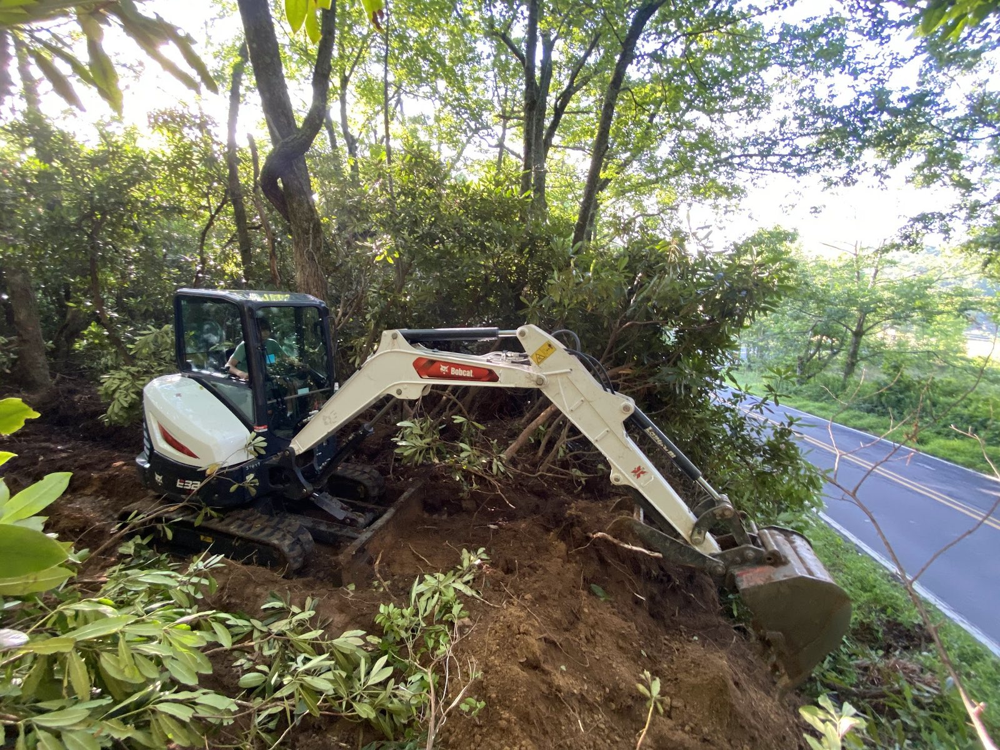
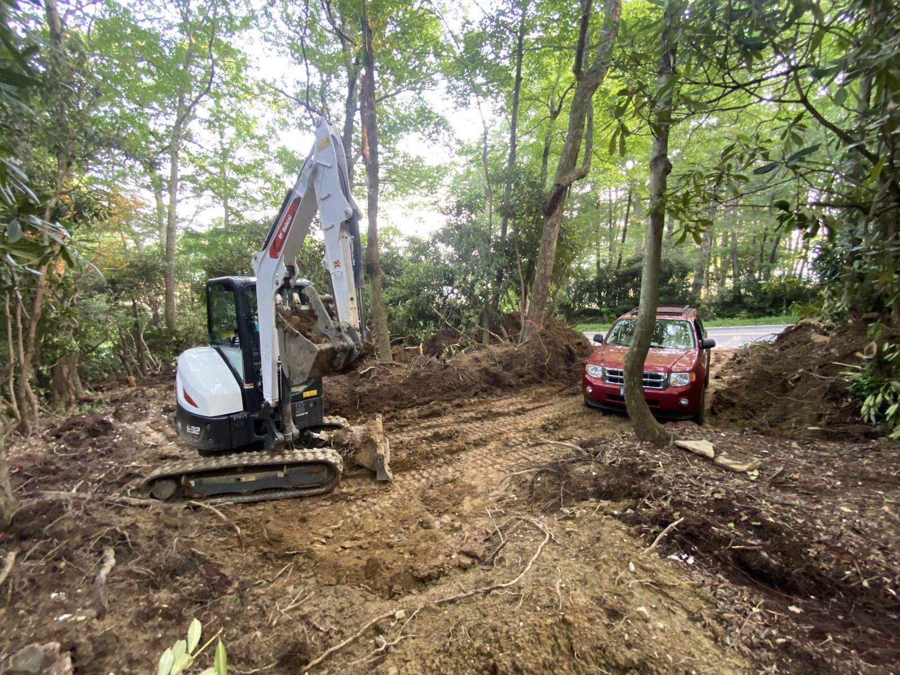
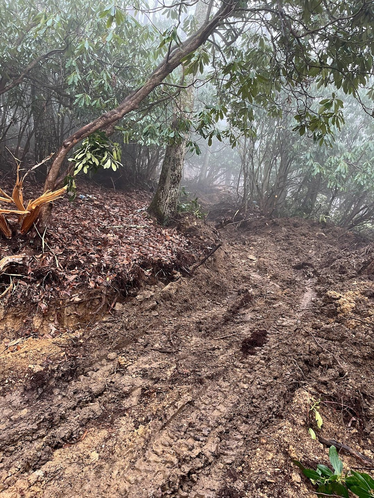
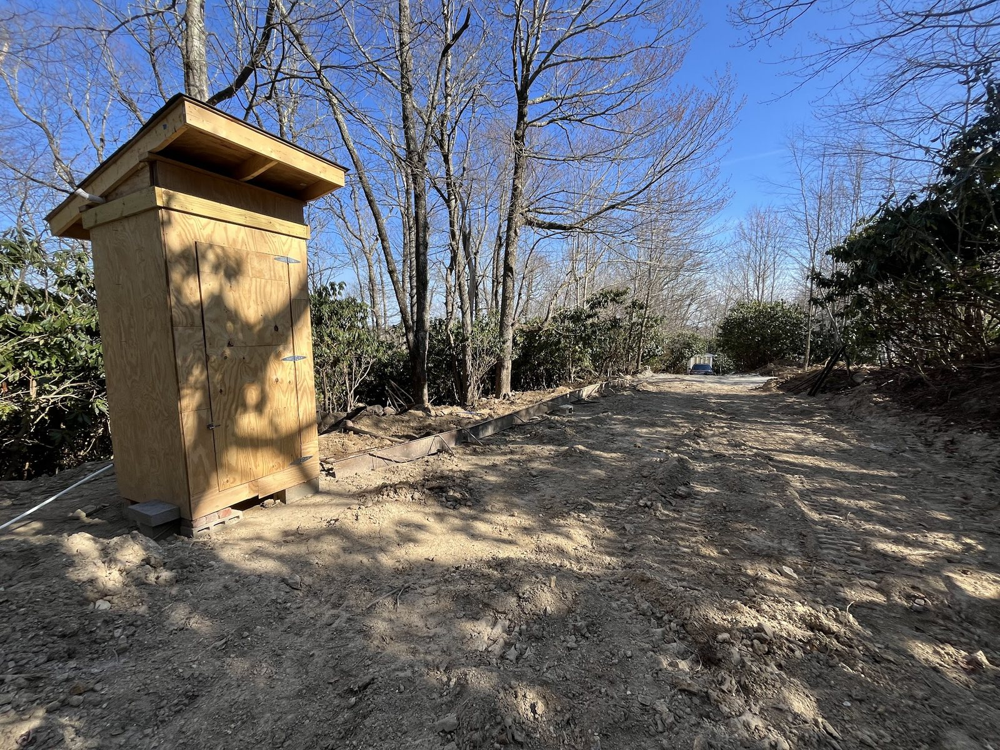
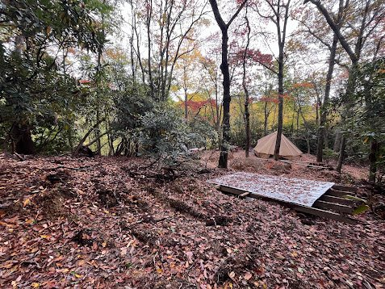
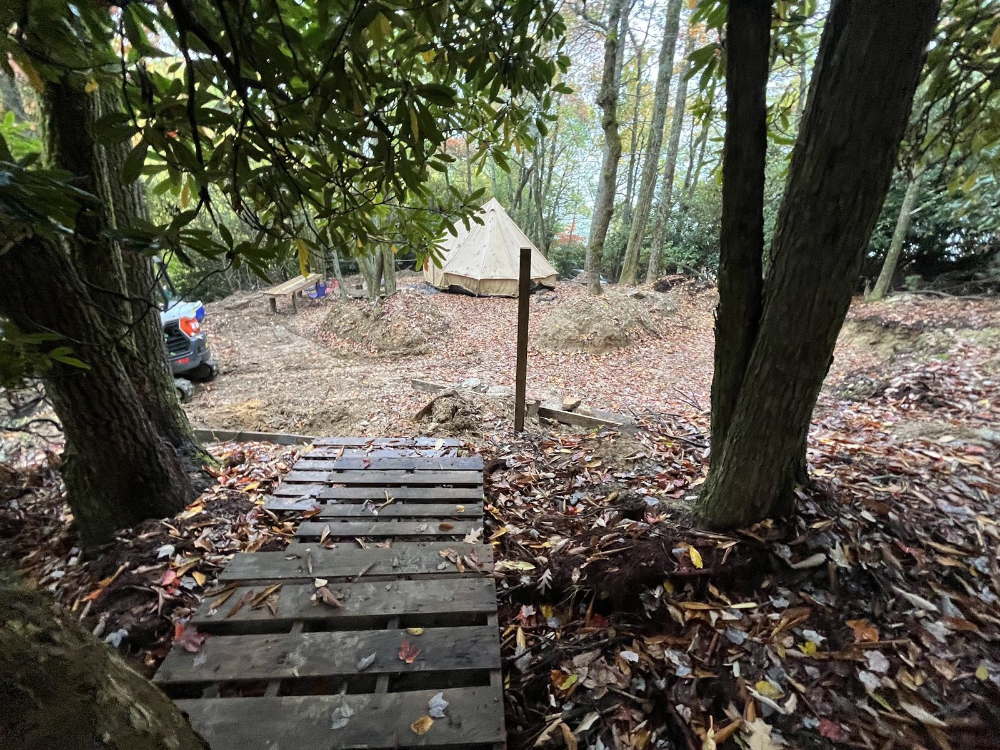
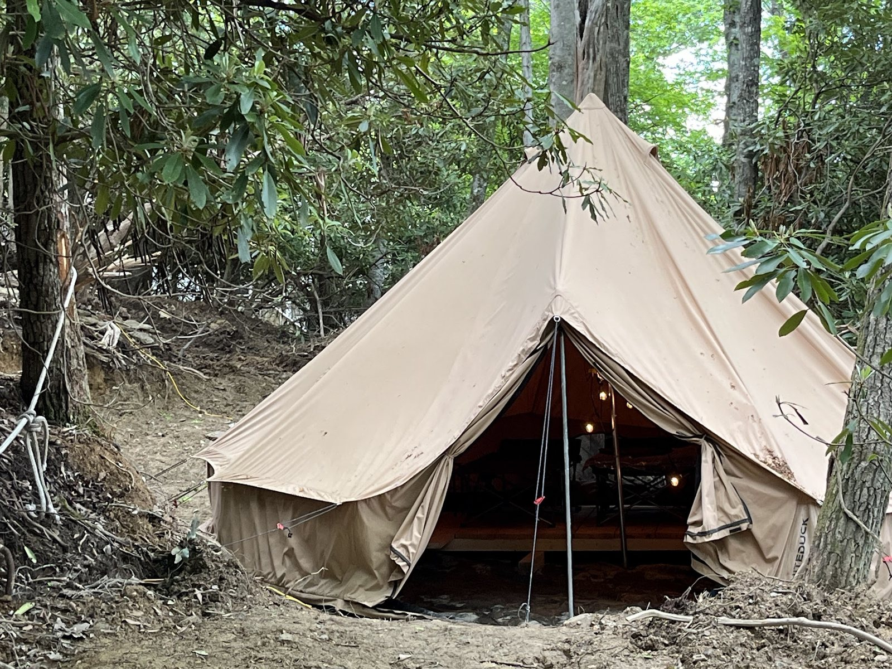

Internal · not for public linking
Every image currently referenced by the site, in one place, with dimensions, upload status, and where each one is wired in — so nothing silently points at a file that isn't actually there.
11 assets on record · 4 confirmed uploaded · 7 confirmed missing
Current status (checked this pass): only the 3 cover images below are actually present in /img/. The 7 land-work photos referenced on peakingwaters.html are not yet in /img/land/ — that's the confirmed cause of the broken thumbnails there. Upload the 7 files listed below into a land/ subfolder inside /img/ and commit/deploy to fix.
Standalone book-cover crop. Portrait, transparent-safe edges, drop shadow baked in.
Cropped from the FRI social/marketing image kit — the "Website Hero/Leaderboard" panel, standardized to 1280×350.
Full-bleed mockup — cover plus the extended landscape scene.
Standard OG/Twitter card ratio (1.91:1), cropped from the wide mockup.

Stage 1 · Bobcat E32 working a rhododendron thicket on the roadside embankment.

Stage 2 · Same cut, graded to a flat, driveable bench.

Stage 3 · Pushing the road further up-slope through fog and root mass.

Stage 4 · Compacted, crowned access road, plus a framed utility structure.

⚠ Source photo was low-res — noticeably smaller than the other six. Will look soft at full width; consider swapping for a higher-res shot if one exists.
Stage 5 · Drainage swales cut into the bench before anything gets built on it.

Stage 6 · Reclaimed-pallet steps down to the finished bench.

Stage 7 · Finished — the end state of the whole sequence.
Generated for internal reference · update this page when a new asset is added, uploaded, or retired.